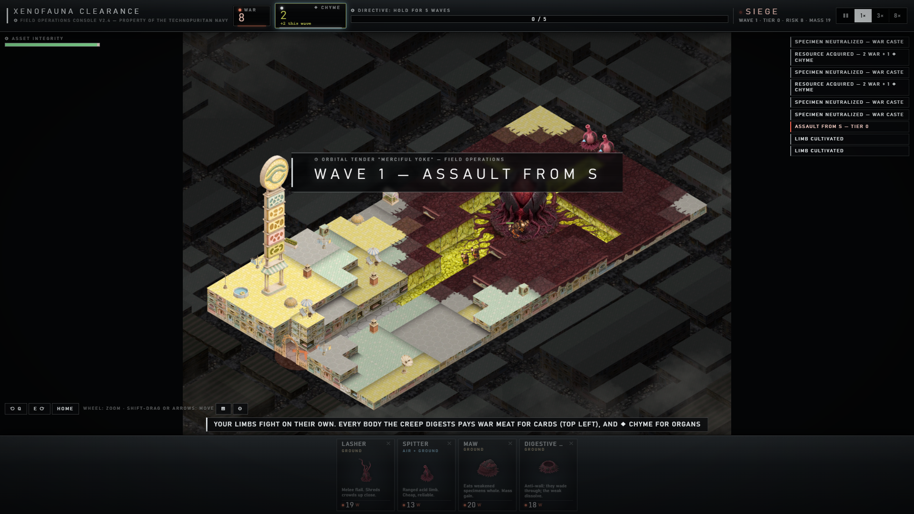
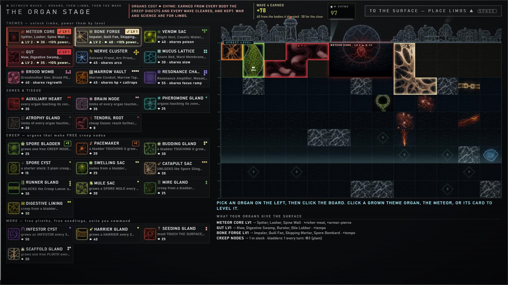
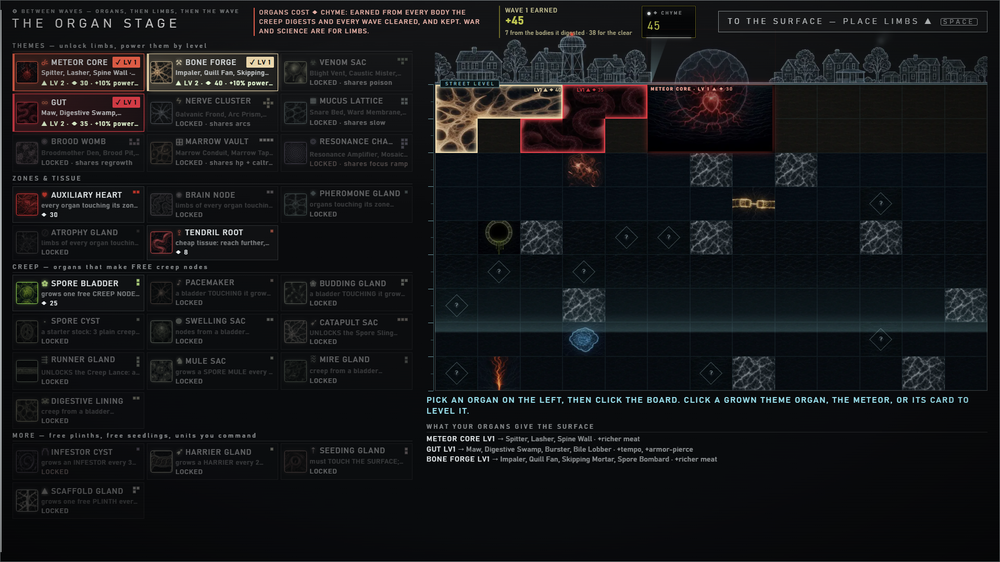
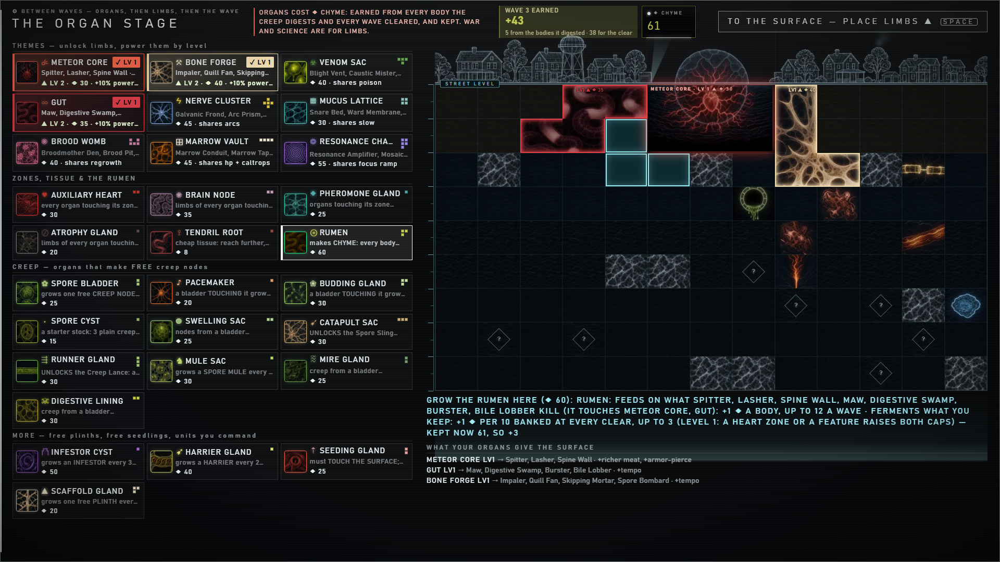
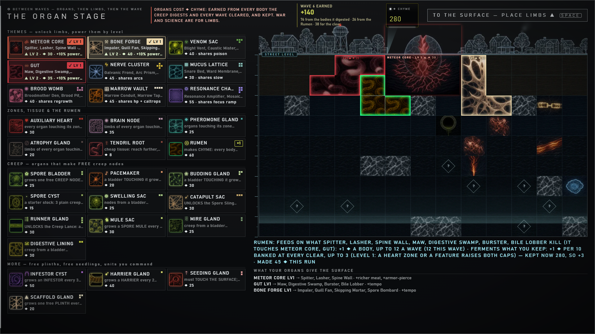

Organs now have their own money: ◆ CHYME
Built, measured and played on Nov 22 2026. Limbs keep war and science; organs are bought only with chyme, which the body earns from every body it digests and every wave it clears, and keeps from wave to wave.
"the organ stage is using the same currency as the limb stage this is not good game design a secondary currency like processed food should build for the organ stage based on what you earned not what you had left"
The short version
| Question | Answer | Verdict |
|---|---|---|
| Name | CHYME: in a body, literally "processed food", what the gut makes of a meal. The creep digests the dead; the body makes chyme of them. | done |
| Where it comes from | Every body the creep digests: a war body 1, a science body 2, one of the court 4. Plus 38 for every wave cleared (this was the old war wage). Meat left unspent gives nothing. | earned, not leftover |
| Kept? | Yes, from wave to wave, no cap. War and science still spoil when the wave starts. | done |
| Prices | Same numbers as before for war-priced organs (Bone Forge 40, Gut 35...). The two science organs are dearer: Marrow Vault 45, Resonance Chamber 55. A level is price x level. | done |
| Limbs | The clearing wage moved from war to chyme, so the limbs' budget stayed where it was (122 limbs a run against 121). | surface as tight as before |
| Difficulty | 18/20 wins before, 17/20 after; core on the wins 76% against 75%. | about the same |
| Royal Larder | Still keeps half the war and science; its job now is saving limb meat for a big limb or an evolution. | kept, reworded |
| Old saves | A run saved before today finishes under the old prices. | tested |
Before and after (the scripted player, 20 runs each)
| OLD: organs bought with leftover meat | NEW: organs bought with chyme | |
|---|---|---|
| Runs won | 18 / 20 | 17 / 20 |
| Limbs grown a run | 121 | 122 |
| Organs grown a run | 21.6 | 22.4 |
| Organ levels bought a run | 1.8 | 6.3 |
| Spent on organs a run | 772 meat (taken from limbs) | 1,099 chyme (taken from nothing) |
| Chyme earned after waves 1, 4, 8, 11 | none | 43, 70, 176, 167 |
What it looks like



The Rumen: the organ that makes chyme
"oh I like the idea of a chyme generating organ think through its agency bonus etc."
The rumen is the fermenting stomach. It is one organ (60 chyme) and how much it makes depends on three choices:
| Lever | What it does | The decision |
|---|---|---|
| What it touches | Every body killed by a limb of a theme organ it touches (or reaches by roots; the meteor counts) gives +1 chyme, up to 12 a wave. | Which limbs do your killing, and can it sit beside their organ, on the cells your next theme wants too? |
| What you keep | At every clear it ferments the chyme you kept: +1 per 10, up to 3. | Spend now, or hold some for a dear level. |
| A heart beside it | An Auxiliary Heart's zone doubles both limits (24 a wave, 6 fermented). | The heart powers a theme's limbs OR the Rumen. |


Early, mid, late, never (the scripted player, 30 runs each)
| Grown | Runs won | Chyme it made a run | Organ levels a run | Verdict |
|---|---|---|---|---|
| Never | 27/30 | 0 | 6.8 | baseline |
| First (saving for it) | 26/30 | 279 | 8.4 | most chyme, fewest wins: the first organ stages go empty |
| Once three themes stand | 29/30 | 151 | 8.0 | best: pays its 60 back in about 4 waves |
| Late (wave 8+) | 27/30 | 50 | 6.3 | barely pays |
Uncapped and at 45 chyme it made 376 a run and was right whenever it was bought (19/20 against 17/20), so it is capped at 12 a wave and costs 60. No chyme buys more Rumen: its level comes only from hearts and features.
Decisions that are yours
- The name and the ◆ glyph. Recommendation: keep CHYME.
- The Rumen's numbers: 60 chyme, +1 a body up to 12 a wave, ferment up to 3, a heart doubling both. Recommendation: keep them; they make "when and where" matter and "first" not best.
- The clear pays a flat 38. The old war wage grew 4 a wave; the bodies already grow with the waves. Recommendation: keep it flat.
For an engineer or an AI: DESIGN.md "CHYME" and HANDOFF.md "Chyme" in C:\Users\Merry\dev\space-derelict\games\broodfall.